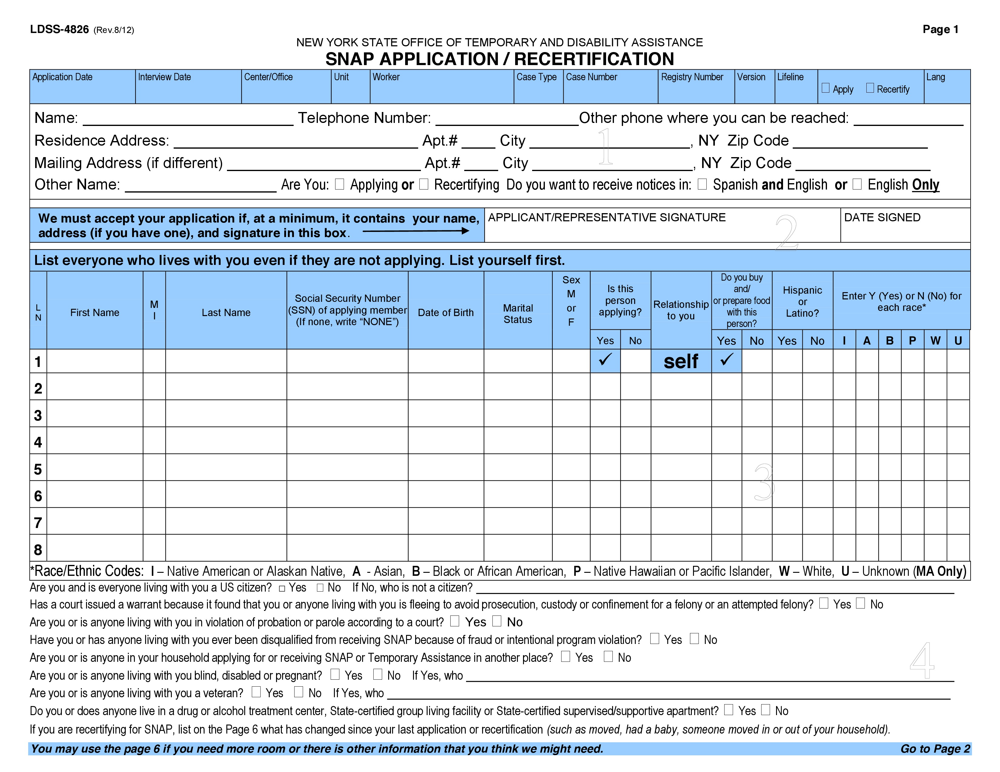
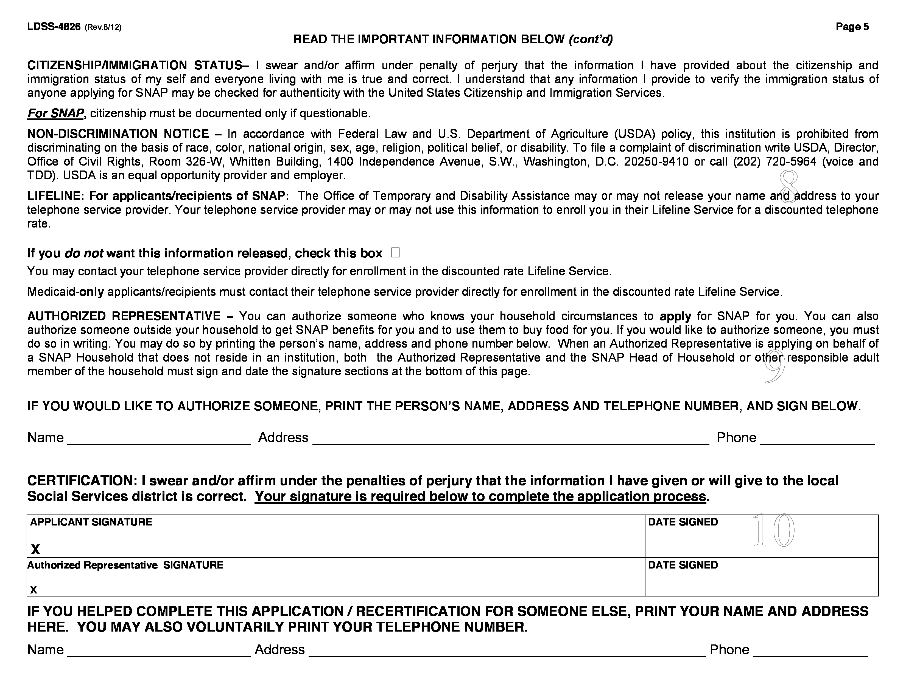

Sign application
Preview your application below, and sign it in 2 places to complete it.
I'm ready to sign

Write your signature in the box above to sign.
Continue to final signature

Write your signature in the box above to sign.
Submit application